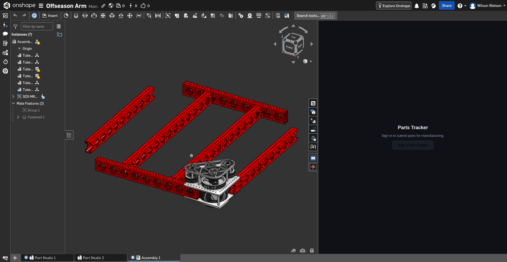
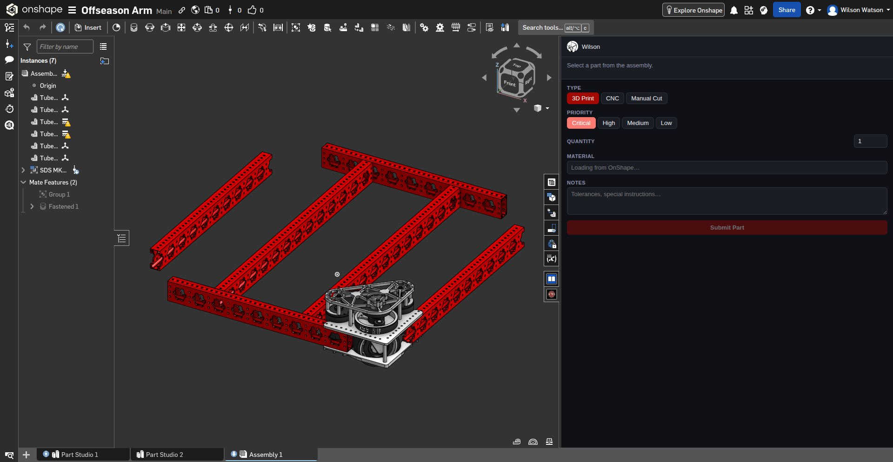
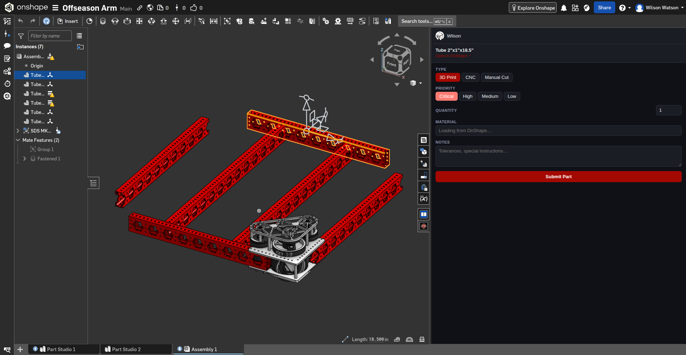
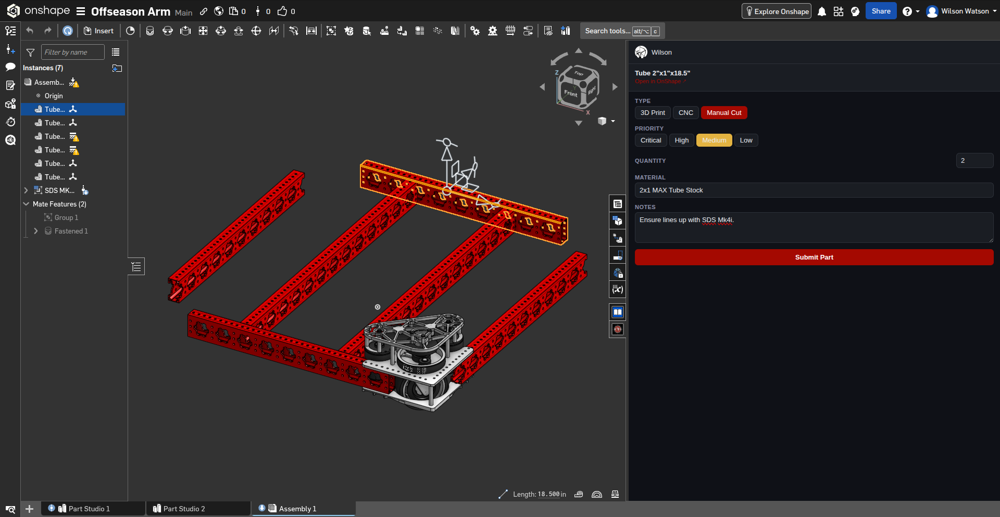
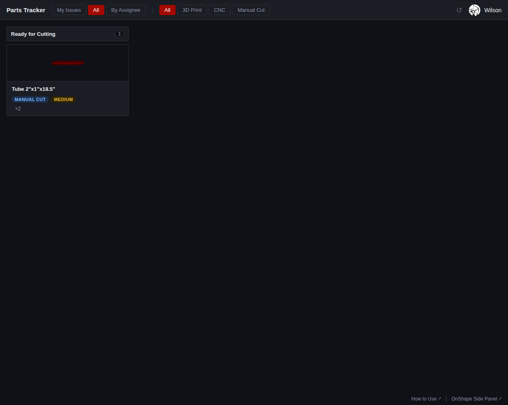
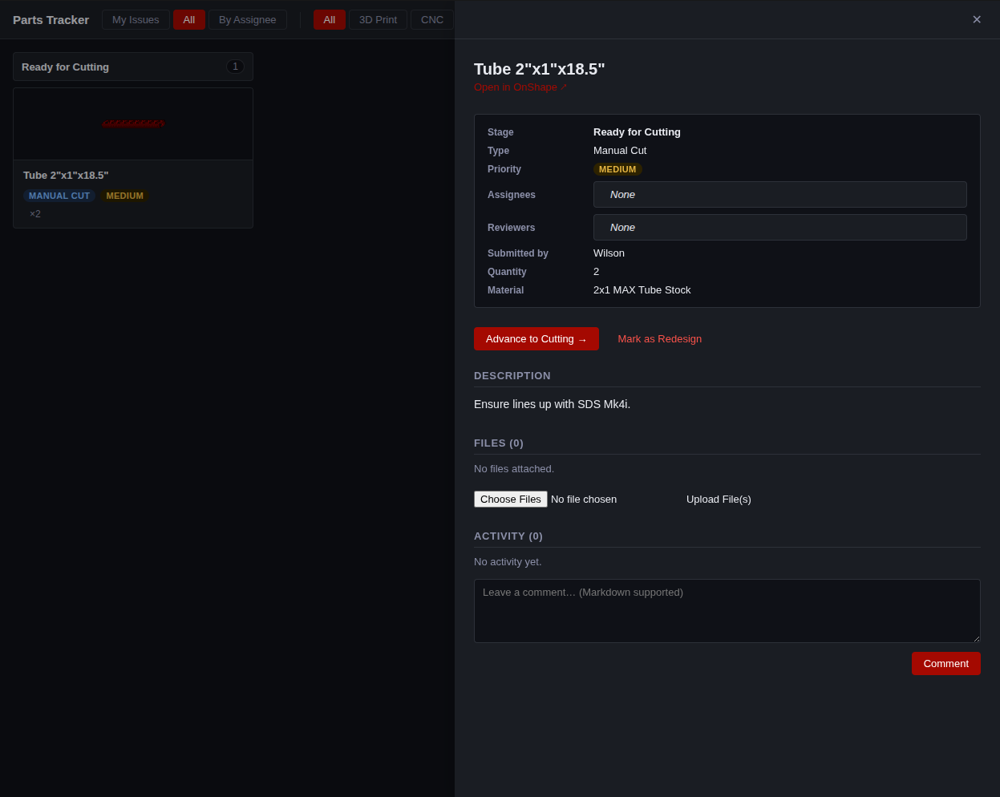
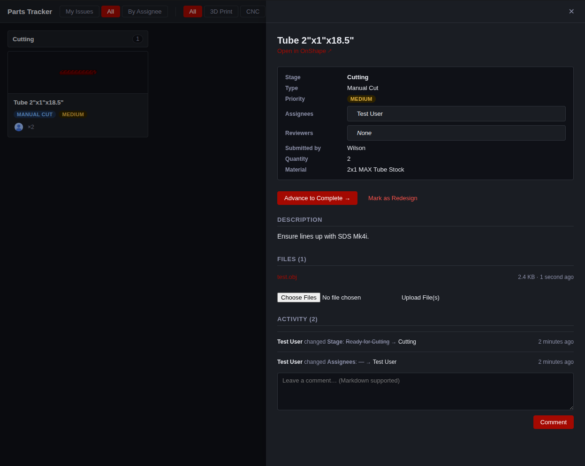
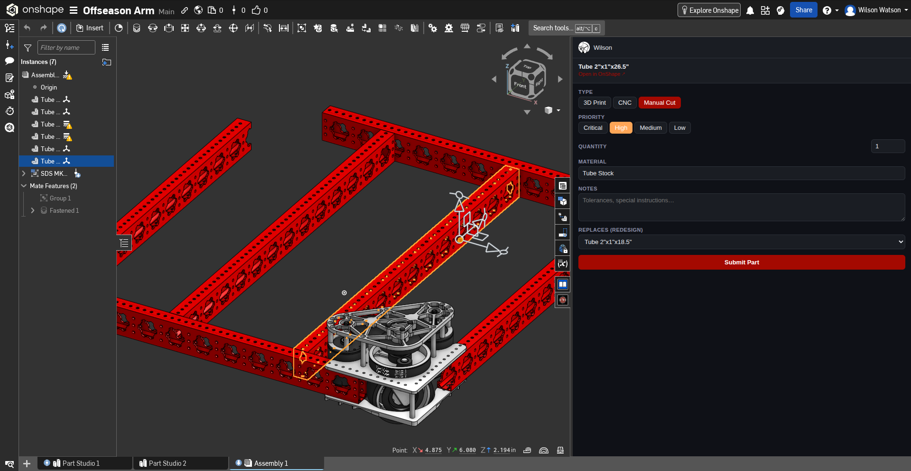
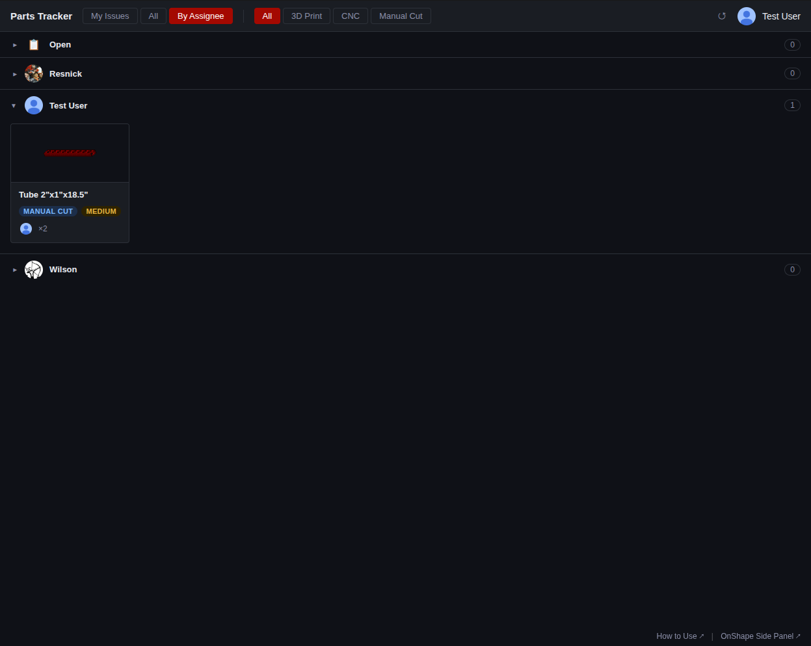

Scroll to zoom · Drag to pan · Esc to close
The Parts Tracker lives inside OnShape as a side panel. Open any assembly document, then click the Parts Tracker tab in the right-hand panel strip. If you don't see it, install it first from the OnShape App Store ↗.

Click Sign in with Google. A small popup will open — complete sign-in there and it closes automatically. The panel will show your name and avatar when ready.

Click any part in the 3D viewport. The panel resolves it automatically and shows the part name and a link to open it directly. Select only one part at a time — selecting multiple will prompt you to narrow it down.
The Material field will pre-fill from the part's OnShape material if one is set.

Choose the manufacturing Type (3D Print, CNC, or Manual Cut), Priority, Quantity, and any Notes such as tolerances or special instructions.
If this part is a replacement for one that was sent back for redesign, pick the original from the Replaces (redesign) dropdown — this links the two together in the tracker.

The part is added to the board instantly. The form resets so you can immediately select the next part and submit again.
Open Parts Tracker. The newly submitted part appears in the first column for its type — Ready for Slicing (3D Print), Ready for CAM (CNC), or Ready for Cutting (Manual Cut).
Use All to see every part, or My Issues to see only parts assigned to you. The type buttons narrow which columns are shown.

Click any card to open the detail panel. It shows the full part info: stage, type, priority, assignees, reviewers, material, description, files, and activity history.
When you've completed your step, click Advance to [next stage] →. The card moves to the next column and the change is recorded in the activity log. Each type follows its own sequence:

Attach relevant files at each stage — slice files (.gcode), CAM programs
(.nc), or drawings (.step, .pdf). Scroll to
Files, choose your files, and click Upload File(s).
Files are stored permanently and downloadable by anyone with access.
Use the comment box in the Activity section to communicate with the team. Comments support Markdown and appear in the timeline alongside stage and assignee changes.

Advance through all stages until you reach Complete. The card disappears from most views (switch to All and look for a Complete column if you need to find it later).
If the part doesn't pass inspection or needs a design change, click Mark as Redesign. This is permanent — confirm carefully.
Once marked, the part becomes available in the Replaces (redesign) dropdown of the OnShape side panel. The designer submits a corrected version linked back to the original, creating a visible chain between the two parts.

Click By Assignee in the top filter bar. Every team member gets a row showing their open parts. Click a row header to collapse or expand it. Members with no parts are collapsed by default but still visible — drag any card onto their row to assign work to them.
Dropping a card on Open removes the current assignee. If a part has multiple assignees, only the person whose row the card came from is swapped.
